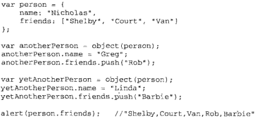

ECMA只支持实现继承，不支持接口继承。
1.原型链
(1) 原理
让原型对象等于另一个类型的实例。
(2) 搜索属性的顺序
实例 –>SubType.prototype –> SuperType.prototype
注意：连接原型链时不是SubType的原型的constructor属性被重写了，而是SubType的原型指向了另一个对象——SuperType的原型，而这个原型的constructor属性指向SuperType。
(3) instanceof
用来确定原型和实例的关系
(4) isPrototypeOf()
(5) 谨慎地定义方法
即：给原型添加方法的代码一定要放在替换原型的语句之后；且要注意不能使用字面量即{ }方式添加原型，否则替换的原型就无效了。
注意：SuperType里本来就有getSuperValue方法，这里被SubType重写覆盖了，故在调用SubType.getSuperValue()时会用重写后的方法，但在调用SuperType.getSuperValue()时仍是使用SuperType里的该方法。
(6) 原型链的缺点
- 超类中包含引用类型值的属性会被所有实例共享，这时由于子类的原型就是超类的一个实例，所以子类的每个实例会共享一个引用类型值。
- 在创建子类的实例时，不能向超类的构造函数中传递参数。
鉴于此两缺点，实践中很少单独使用原型链。
2.借用构造函数
(1) 原理
在子类型构造函数的内部调用超类型构造函数。这样一来SubType的每个实例就都会有自己的colors属性副本了，而且还可以传递初始化参数。
(2) 缺点
- 构造函数模式存在的问题：方法都在构造函数中定义，因此函数复用就无从谈起了。
- 在超类型的原型中定义的方法，对子类型而言也是不可见的，结果所有类型只能使用构造函数模式。
鉴于此两点，借用构造函数模式也很少单独使用。
3.组合继承（最常用）
(1) 原理
使用原型链实现对原型属性和方法的继承，而通过借用构造函数来实现对实例属性的继承。
(2) 优点
- 每个实例拥有自己的属性；
- 每个实例可以使用相同的方法。
- Instanceof和isPrototypeOf()能够识别此方法创建的对象。
(3) 缺点
每次都会调用两次超类型构造函数。
4.原型式继承
(1) 原理
基于已有的对象创建新对象，同时还不必因此创建自定义类型。
这相当于把对象o进行了一次浅复制。
例子：

新对象将person作为原型，其中包含一个基本类型属性name和一个引用类型属性friends，其中friends会被两个新对象所共享。
(2) ES5中的实现——Object.create()
接收2个参数：作为新对象的原型的对象、新对象额外属性组成的对象（可选）。
(3) 优点
在没有必要创建构造函数，只想让一个对象与另一个对象保持类似的情况下，此种方法可以胜任。
(4) 缺点
会存在与原型模式一样的情况——引用类型值属性会被共享。
5.寄生式继承
(1) 原理
创建一个仅用于封装继承过程的函数，该函数在内部以某种方式来增强对象，最后再像真的是它做了所有工作一样返回对象。

（是与原型式继承紧密相关的一种思路，构造上与寄生构造函数模式、工厂模式很像。）
(2) 适用场景
在主要考虑对象而不是自定义类型和构造函数的情况下可用。
注意：其中的object()函数不是必需的，任何能返回新对象的函数都适用于此模式。
(3) 缺点
会存在与构造函数模式一样的情况——不能做到函数复用（此例中的sayHi方法）。
6.寄生组合式继承
(1) 原理
寄生组合式继承是为了解决组合继承中两次调用超类型构造函数的问题的。
如上图：第一次调用的时候对超类型进行了实例化，此时超类型中的实例属性name和colors被继承到SubType的原型中；第二次调用的时候又会再次把SuperType的两个实例属性赋到SubType的实例中。这样过后，SubType原型中的name和colors就被实例中的name和colors覆盖了。
下图是寄生组合继承的原理图：
运用了原型式继承。使用时只需将组合击沉中的“SubType.prototype = new SuperType();”替换成inheritPrototype(subType,superType);即可。
(2) 优点
- 只调用了一次超类型构造函数，避免了创建多余的属性；
- 原型链还能保持不变，还能正常使用instanceof和isPrototypeOf()。
鉴于此两优点，寄生组合式继承是引用类型最理想的继承范式。